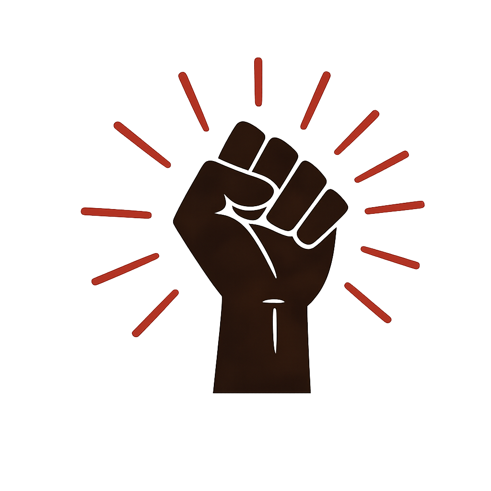
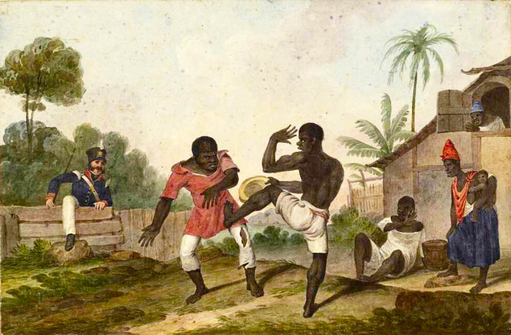
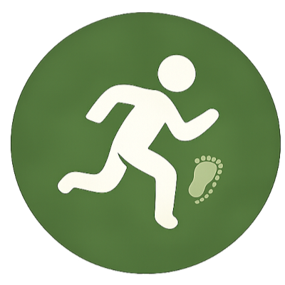
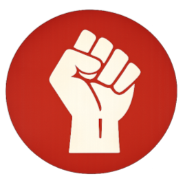
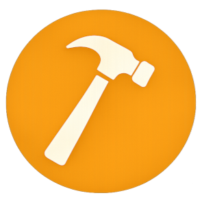
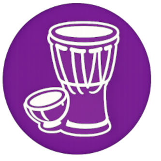
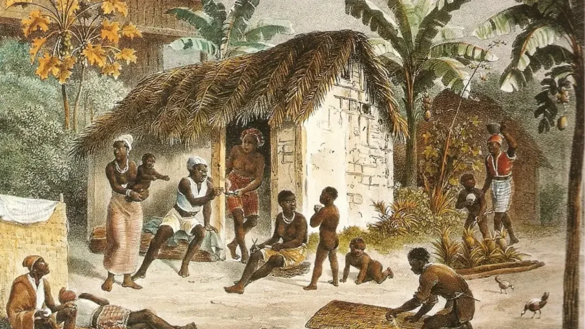

Contexto histórico: durante a escravidão no Brasil, pessoas escravizadas resistiram de muitas formas, da fuga à Justiça. Conheça cada uma delas.

Durante o período da escravidão no Brasil, as pessoas escravizadas enfrentaram condições extremamente difíceis e injustas. No entanto, elas não aceitaram essa situação de forma passiva.
De diferentes maneiras, homens, mulheres e crianças buscaram resistir à opressão, preservar sua cultura, proteger suas famílias e conquistar sua liberdade.
Essas ações demonstram a coragem, a organização e a determinação daqueles que lutaram contra o sistema escravista, deixando importantes exemplos de resistência ao longo da história brasileira.

Insira imagem_capuera.jpg
na pasta imgs/





Insira Quadro-Palmares-960x540.webp
na pasta imgs/
Caetana entrou com um processo na Justiça para anular seu casamento forçado.
Qual tipo de resistência é essa?
No Brasil, casamento forçado é crime, e a Lei Maria da Penha protege mulheres em situação de violência. O que Caetana lutou por quase 200 anos atrás hoje está garantido em lei, mas ainda precisa ser defendido todos os dias.
Momento para pensar juntos: com base em tudo que estudamos, o processo de Caetana, as formas de resistência e as conexões com o presente. Como a turma definiria "resistência"?